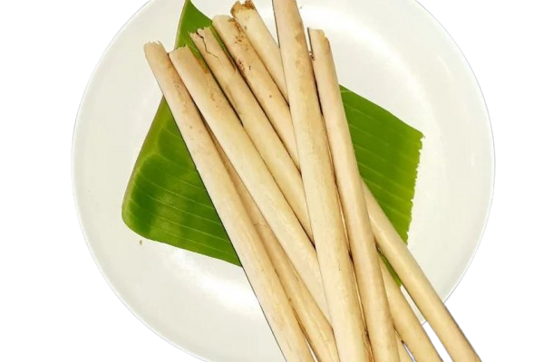

Ledre
Ledre is a Bojonegoro's typical food industry. Ledre is made from plantains, wheat flour, sugar and rice flour. The ingredients are processed into thin dough and then fried and rolled with a length of about 20 cm. Ledre has a unique and crunchy taste.